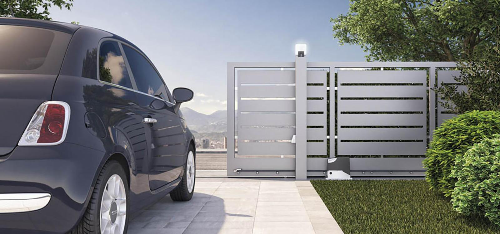
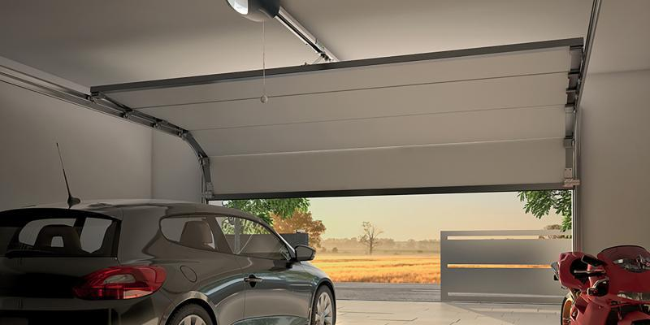

АВТОМАТИКА ЗА ВРАТИ И РАМПИ
КРИЛНИ ВРАТИ

Крилните врати се популарен избор за станбени и комерцијални имоти, бидејќи се лесни за ракување и обезбедуваат високо ниво на безбедност. Селкон е компанија која е специјализирана за инсталирање на системи за автоматизација на крилни врати, кои обезбедуваат удобност и безбедност на сопствениците на имот. Со употребата на напредна технологија и висококвалитетни материјали од Италјански квалитети BFT, GENIUS, FAAC. Селкон гарантира дека нивните системи за автоматизација на портата за нишање се сигурни, издржливи и ефикасни. Генерално, автоматизацијата на портата за нишање е одлично решение за оние кои ја ценат удобноста, безбедноста и мирот на умот.
ЛИЗГАЧКИ ВРАТИ

Селкон е фирма специјализирана за монтажа на автоматизирани системи со лизгачки врати. Автоматизацијата на лизгачки врати се однесува на процесот на моторизирање на отворање и затворање на лизгачки врати, обезбедувајќи зголемена удобност, пристапност и безбедност за низа имоти, вклучувајќи комерцијални, малопродажни и здравствени згради. Системите за автоматизација на лизгачки врати на Селкон се напојуваат со електрична енергија и може да се ракуваат со користење на различни методи на контрола, како што се сензори, копчиња за притискање, далечински управувачи или од вашиот мобилен телефон.
ПАРКИНГ РАМПИ


Паркинг рампи се системи за автоматизација на портите кои го контролираат пристапот на возилата до различни локации. Тие се состојат од хоризонтален крак на стрелата што може да се ракува рачно или автоматски со помош на електрични мотори. Селкон е специјализиран за инсталирање и одржување приспособени системи за бариера на патиштата кои нудат дополнителни безбедносни и безбедносни карактеристики како што се сензори за опструкција.
ГАРАЖНИ ВРАТИ

Селкон е водечка фирма во монтажа и одржување на системи за автоматизација на гаражни врати. Тие нудат низа приспособливи решенија за да одговараат на уникатните потреби на нивните клиенти, без разлика дали се работи за станбени или комерцијални имоти. Системите за автоматизација на гаражни врати обезбедуваат удобен и безбеден начин за пристап до гаражата без потреба од рачно отворање или затворање на вратата. Со овие системи може да се управува со далечински управувач, тастатури или сензори за движење, што овозможува лесен и ефикасен пристап. Експертскиот тим на Селкон може да обезбеди совети за најдобриот тип на систем за автоматизација на гаражни врати за да одговара на потребите на клиентот. Нудиме разновидни системи, како што се отворачи на гаражни врати со појас, со ланец и со навртување, кои се дизајнирани да одговараат на различни типови и големини на гаражни врати. Тие исто така обезбедуваат услуги за инсталација, одржување и поправка за да се осигураат дека системот останува функционален и сигурен.